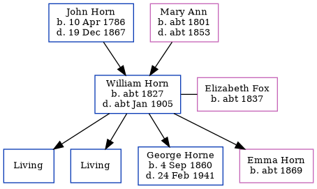

William Horn c1827 - c1905
[ Home ] | [ Calendar ] | [ Surnames Index ] | [ Errors ] | [ Family History ]A policeman and the child of John Horn (a labourer) and Mary Ann, William Horn, the three times great-uncle of Nigel Horne, was born in Margate, Kent, England c. 18271,2,3, was baptised there at St John the Baptist's Church on 15 Jul 1827 and had 4 children with Elizabeth Fox: Thomas W, James John, George Charles and Emma, along with 2 surviving children.
During his life, he was living at his birthplace in 18411; at Chapel Hill in Margate on 6 Jun 18419; at Batty Street, Whitechapel, London, England on 7 Apr 18618; at 11 Batty Street in Whitechapel on 2 Apr 18717; and at 62 Boundary Road, Ramsgate, Kent, England on 31 Mar 19016 - less than a mile from his niece Caroline who was living at 3 Elms Park Terrace in Ramsgate.
He died c. Jan 1905 in Thanet, Kent, England3,4 and was buried in Ramsgate on 5 Jan 1905 (Aged 77.)5.
Parents
- John was born on 10 Apr 1786
- Mary Ann was born c. 1801
Children
- George Charles was born on 4 Sept 1860
- Emma was born c. 1869
Citations
- 1841 England Census Online publication - Provo, UT, USA: The Generations Network, Inc., 2006.Original data - Census Returns of England and Wales, 1841. Kew, Surrey, England: The National Archives of the UK (TNA): Public Record Office (PRO), 1841. Data imaged from the National
- 1901 England Census Online publication - Provo, UT, USA: The Generations Network, Inc., 2005.Original data - Census Returns of England and Wales, 1901. Kew, Surrey, England: The National Archives of the UK (TNA): Public Record Office (PRO), 1901. Data imaged from the National
- England & Wales, FreeBMD Death Index: 1837-1915 Online publication - Provo, UT, USA: The Generations Network, Inc., 2006.Original data - General Register Office. England and Wales Civil Registration Indexes. London, England: General Register Office. © Crown copyright. Published by permission of the Cont
- England & Wales deaths 1837-2007 - Findmypast
- Other
- 1901 England, Wales & Scotland Census - Findmypast (was age 73 and the father of the head of the household)
- 1871 England, Wales & Scotland Census - Findmypast
- 1861 England, Wales & Scotland Census - Findmypast (was age 33 and the head of the household)
- 1841 England, Wales & Scotland Census - Findmypast (was age 13 and the son of the head of the household)
Media
1871 England, Wales & Scotland Census - GBC/1871/0002634246
1861 England, Wales & Scotland Census Transcription - GBC-1861-0001771507
Family Tree
Map
Generated by ged2site. Last updated on Jul 3, 2024
Known Issues
May have been living with mother on 1841, but the addresses don't match or aren't detailed enough to be sure
Census information missing between Census UK 1841 and Census UK 1861